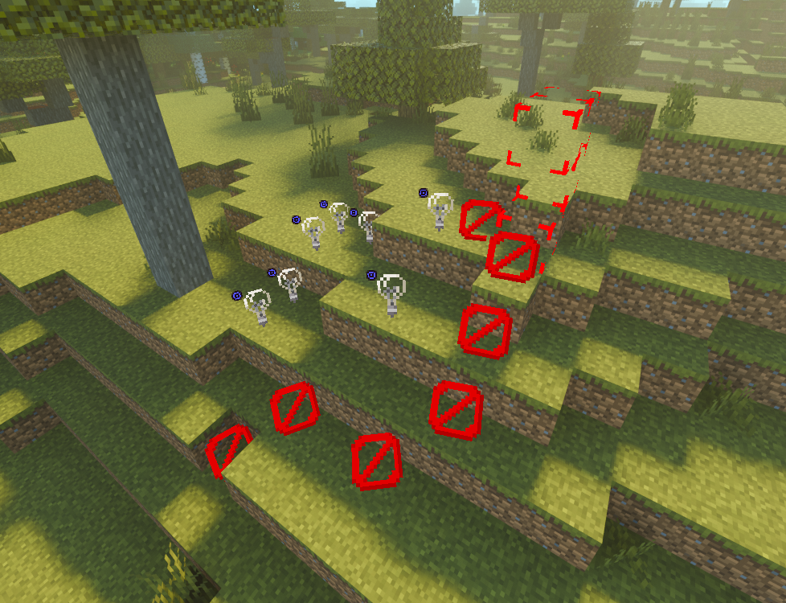

A mod that shows blocks that are usually invisible.
This was originally made by another scripter, jqms/rosie, but I made it so that two of the three blocks it deals with are instead just one image which always faces the player (like how the game does it).
I also did a cool little optimization, where they only render if they are on the screen
These blocks should be invisible.